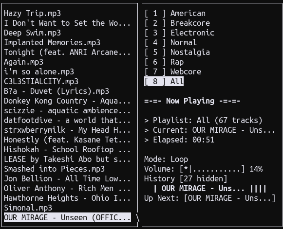

Table of Contents
1. ampire
Note: This project is still in the early development stages, so there are many bugs and it may not work properly.
Note: This package can be installed through Forge [ https://github.com/malloc-nbytes/forge ].
ampire is a simple music player that is ran in the terminal.
1.1. Dependencies
- SDL3 <vendored> (no download required)
- SDL3mixer <vendored> (no download required)
- ncurses
1.2. Compiling and Installing
Perform the following the compile ampire.
- First clone the repository recursively.
git clone https://www.github.com/malloc-nbytes/ampire --recursive
- Use
Cmaketo build the project Makefile(s)
cd ampire mkdir build && cd build cmake -S .. -B . make -j$(nproc) sudo make install
- If you run
ampirebut it has trouble linking during runtime, do
sudo ldconfig
then try running it again.
- Run
ampire -hto view all help information.
1.3. Controls
| Keybind | Action |
|---|---|
| [ DOWN ], [ j ] | Move down in the song selection |
| [ UP ], [ k ] | Move up in the song selection |
| [ RIGHT ], [ l ] | Seek forward in the music 10 seconds |
| [ LEFT ], [ h ] | Seek backward in the music 10 seconds |
| [ . ], [ > ], [ L ] | Next song |
| [ , ], [ < ], [ H ] | Previous song from history |
| [ - ], [ _ ] | Volume down |
| [ + ], [ = ] | Volume up |
| [ a ] | Toggle song advancement between normal, shuffle, and loop |
| [ m ] | Mute/unmute |
| [ u ] | Add to 'up-next' (queue) |
| [ SPACE ] | Pause / play |
| [ f ] | Open a file dialogue (unimplemented) |
| [ / ] | Search the song list with regex |
| [ n ] | Search for next match |
| [ N ] | Search for previous match |
| [ d ] | Delete song list |
| [ g ] | Jump to first song |
| [ G ] | Jump to last song |
| [ ! ] | Remove duplicate tracks from playlist |
| [ ENTER ] | Play song from song list |
| [ CTRL+l ] | Redraw screen |
| [ CTRL+q ] | Quit |
| [ CTRL+s ] | Save song list |
| [ J ] | Next song list |
| [ K ] | Previous song list |
| [ [ ] | Previous song list page |
| [ ] ] | Next song list page |
You can see this table by calling ampire --controls.
1.4. Known Bugs
- It is unable to display non-utf8 characters.
- Occasional clicking could happen when starting a song, but it goes away after a few seconds.
- Sometimes when you delete a playlist after adding a bunch of them, it will remove the wrong one (unsure of the cause as of now).
1.5. Screenshots
1.5.1. Large Terminal
1.5.2. Small Terminal
